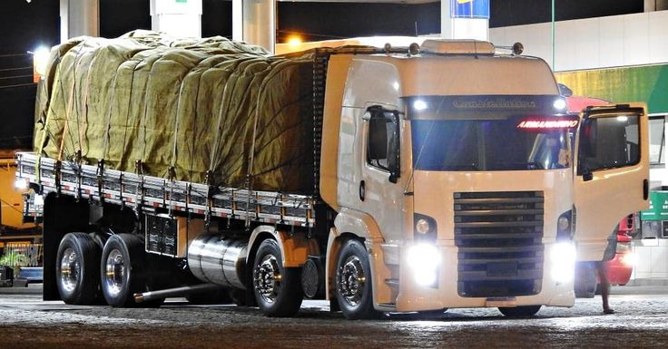
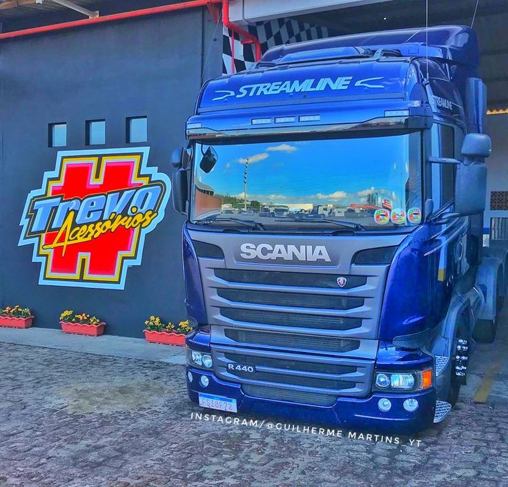

VW Constellation 24250 Cabinado

Especificações:
- Motor: 250 cv
- Transmissão: Manual de 9 marchas
- PBT: 24.000 kg
- Capacidade Total: 57.000 kg
- Suspensão: Eixo rígido com molas semi-elípticas
- Freios: ABS e ar comprimido
Scania R440

Especificações:
- Motor: 440 cv
- Transmissão: Manual de 12 marchas
- PBT: 18.000 kg
- Capacidade Total: 60.000 kg
- Suspensão: Suspensão a ar
- Freios: ABS com EBS (Sistema de Controle Eletrônico de Frenagem)
Volvo FH460

Especificações:
- Motor: 460 cv
- Transmissão: Manual de 12 marchas
- PBT: 18.000 kg
- Capacidade Total: 60.000 kg
- Suspensão: Suspensão a ar
- Freios: ABS com EBS